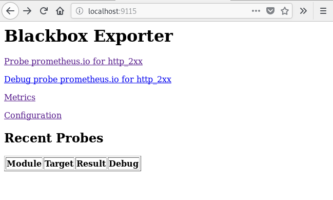
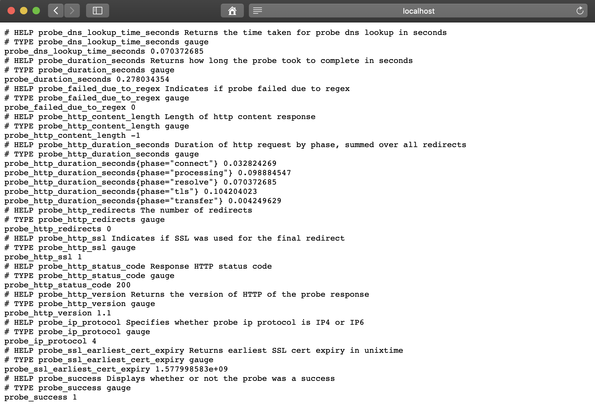
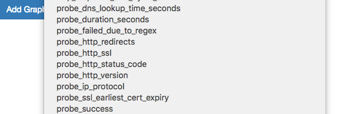
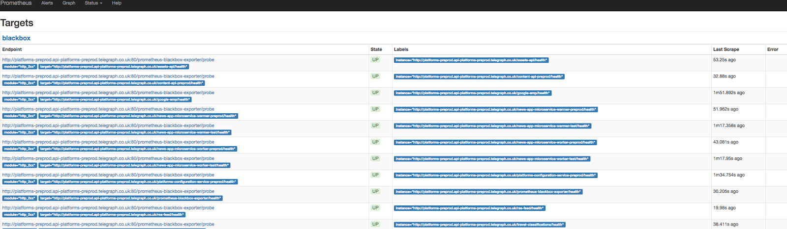
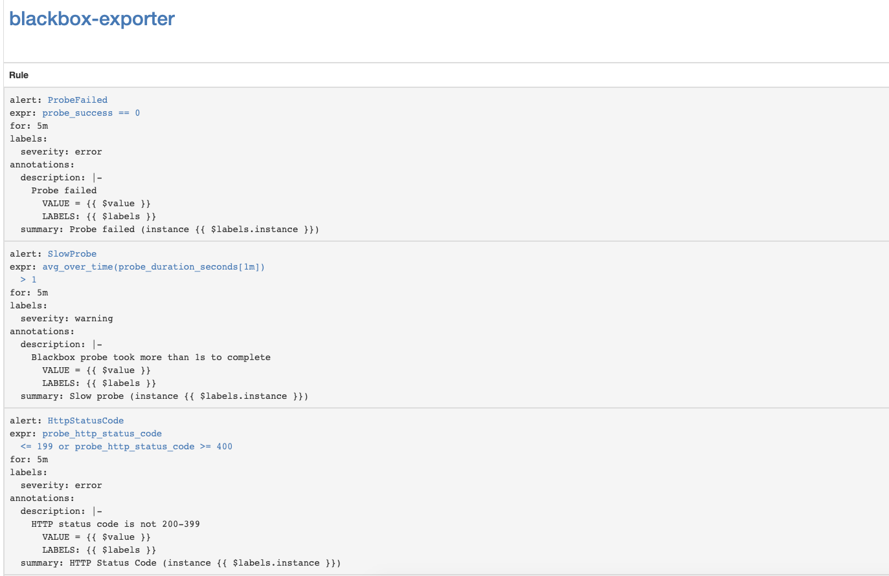

<!doctype html>
<html class="no-js" lang="ko">
    <head>
        <meta charset="utf-8">
        <meta name="viewport" content="width=device-width, initial-scale=1">
        <meta name="author" content="lapee79">
        <meta name="description" content="lapee79&#39;s IT Tech Blog.">
        <meta name="keywords" content="blog,personal,posts,it,korean">
        <meta name="generator" content="Hugo 0.53" />
        <title> Blackbox exporter를 이용한 HTTP 모니터링 | lapee79&#39;s Tech Blog</title>
        <meta name="description" content="Blackbox exporter를 이용한 HTTP 모니터링 - lapee79&#39;s IT Tech Blog.">
        <meta itemprop="name" content="Blackbox exporter를 이용한 HTTP 모니터링">
        <meta itemprop="description" content="Blackbox exporter를 이용한 HTTP 모니터링 - lapee79&#39;s IT Tech Blog.">
        <meta property="og:title" content="Blackbox exporter를 이용한 HTTP 모니터링">
        <meta property="og:description" content="Blackbox exporter를 이용한 HTTP 모니터링 - lapee79&#39;s IT Tech Blog.">
        <meta property="og:image" content="https://www.gravatar.com/avatar/4068068eb59505ffebdc556d0aa2c9c9?size=200">
        <meta property="og:url" content="https://lapee79.github.io/article/monitoring-http-using-blackbox-exporter/">
        <meta property="og:site_name" content="lapee79&#39;s Tech Blog">
        <meta property="og:type" content="article">
        <link rel="icon" type="image/png" href="https://lapee79.github.io/favicon-32x32.png" sizes="32x32">
        <link rel="icon" type="image/png" href="https://lapee79.github.io/favicon-16x16.png" sizes="16x16">

	

        
        
        
        
        <link rel="stylesheet" href="https://lapee79.github.io/sass/combined.min.c7b63af25d73ccc22a82ec5d3a6dfccaf77ecee67014e5cc71dd9d8eafec0d4e.css">

        

        
            
        
    </head>
    <body class="bilberry-hugo-theme">
        
<nav class="permanentTopNav">

    <div class="container">
        <ul class="topnav">
            
        </ul>

        
            <div id="search-box" class="search">
                <i class="fa fa-search"></i>
                <input id="search" type="text" placeholder="검색 ...">
            </div>
        
    </div>
</nav>


        <header>
    <div class="container">
        <div class="logo">
            <a href="/" class="logo">
                
                    
                

                <span class="overlay"><i class="fa fa-home"></i></span>
            </a>
        </div>
        <div class="titles">
            <h3 class="title"><a href="/">lapee79&#39;s Tech Blog</a></h3>
            
                <span class="subtitle">lapee79의 기술 지식 창고.</span>
            
        </div>

    

        
        <div class="toggler permanentTopNav">
        
            <i class="fa fa-bars" aria-hidden="true"></i>
        </div>
    </div>
    <script data-ad-client="ca-pub-6723773787660575" async src="https://pagead2.googlesyndication.com/pagead/js/adsbygoogle.js"></script>
</header>


        <div class="main container">
            
     
    <div class="article-wrapper u-cf single">
        
            <a class="bubble" href="/article/monitoring-http-using-blackbox-exporter/">
    <i class="fa fa-fw fa-pencil"></i>
</a>

<article class="default article">
    
    <div class="featured-image">
        <a href="/article/monitoring-http-using-blackbox-exporter/">
            
                
            
        </a>
    </div>


    <div class="content">
    <h3><a href="/article/monitoring-http-using-blackbox-exporter/">Blackbox exporter를 이용한 HTTP 모니터링</a></h3>
    <div class="meta">
        
            
                <span class="date moment">2019-10-27</span>
            
        

        

        
            <span class="categories">
                
                    <a href="/categories/prometheus">Prometheus</a>
                
                    <a href="/categories/monitoring">Monitoring</a>
                
                    <a href="/categories/exporter">Exporter</a>
                
                    <a href="/categories/tutorials">Tutorials</a>
                
            </span>
        

        
            <span class="author"><a href="/author/lapee79">lapee79</a></span>
        
    </div>

    
        

<p>Prometheus에서는 <a href="https://github.com/prometheus/blackbox_exporter">Blackbox exporter</a> 를 이용하여 외부에 있는 서비스의 HTTP/HTTPS, DNS, TCP, ICMP 모니터링을 할 수 있습니다. 이 포스트에서는 이중에 HTTP/HTTPS를 모니터링하는 방식을 간단하게 알아보도록 하겠습니다. Kubernetes 상에서 Prometheus를 사용하는 환경의 사용자를 대상으로 작성하였습니다.</p>

<h2 id="실행환경">실행환경</h2>

<p>여기에서는 다음과 같은 환경에서 Blackbox exporter를 사용한 모니터링 실습을 진행합니다.</p>

<ul>
<li>Kubernetes</li>
<li>Prometheus operator</li>
</ul>

<h2 id="blackbox-exporter-설정-파일-생성">Blackbox exporter 설정 파일 생성</h2>

<p>웹 서비스 엔드포인트를 모니터링하기 위한 <code>http</code> 모듈을 구성하기 위해 Blackbox configuration 파일을 <code>ConfigMap</code>으로 작성합니다.</p>

<pre><code>apiVersion: v1
kind: ConfigMap
metadata:
  name: prometheus-blackbox-exporter
  labels:
    app: prometheus-blackbox-exporter
data:
  blackbox.yaml: |
    modules:
      http_2xx:
        http:
          no_follow_redirects: false
          preferred_ip_protocol: ip4
          valid_http_versions:
          - HTTP/1.1
          - HTTP/2
          valid_status_codes: []
        prober: http
        timeout: 5s
</code></pre>

<p>위 모듈은 HTTP 프로토콜을 통해 액세스했을 때 서비스에서 2xx HTTP 상태 코드를 반환하는지를 확인하는데 사용되는 <code>http_2xx</code>라는 모듈을 작성한 것입니다. 설정값에 대한 상세한 내용은 <a href="https://github.com/prometheus/blackbox_exporter/blob/master/CONFIGURATION.md">다음 문서</a> 에서 확인하실 수 있습니다.</p>

<h2 id="kubernetes에-blackbox-exporter-배포">Kubernetes에 Blackbox exporter 배포</h2>

<p>Kubernetes에 배포할 수 있도록 Deployment와 Service를 작성합니다.</p>

<pre><code>---
kind: Service
apiVersion: v1
metadata:
  name: prometheus-blackbox-exporter
  labels:
    app: prometheus-blackbox-exporter
spec:
  type: ClusterIP
  ports:
    - name: http
      port: 9115
      protocol: TCP
  selector:
    app: prometheus-blackbox-exporter

---
apiVersion: apps/v1
kind: Deployment
metadata:
  name: prometheus-blackbox-exporter
  labels:
    app: prometheus-blackbox-exporter
spec:
  replicas: 1
  selector:
    matchLabels:
      app: prometheus-blackbox-exporter
  template:
    metadata:
      labels:
        app: prometheus-blackbox-exporter
    spec:
      restartPolicy: Always
      containers:
        - name: blackbox-exporter
          image: &quot;prom/blackbox-exporter:v0.15.1&quot;
          imagePullPolicy: IfNotPresent
          securityContext:
            readOnlyRootFilesystem: true
            runAsNonRoot: true
            runAsUser: 1000
          args:
            - &quot;--config.file=/config/blackbox.yaml&quot;
          resources:
            {}
          ports:
            - containerPort: 9115
              name: http
          livenessProbe:
            httpGet:
              path: /health
              port: http
          readinessProbe:
            httpGet:
              path: /health
              port: http
          volumeMounts:
            - mountPath: /config
              name: config
        - name: configmap-reload
          image: &quot;jimmidyson/configmap-reload:v0.2.2&quot;
          imagePullPolicy: &quot;IfNotPresent&quot;
          securityContext:
            runAsNonRoot: true
            runAsUser: 65534
          args:
            - --volume-dir=/etc/config
            - --webhook-url=http://localhost:9115/-/reload
          resources:
            {}
          volumeMounts:
            - mountPath: /etc/config
              name: config
              readOnly: true
      volumes:
        - name: config
          configMap:
            name: prometheus-blackbox-exporter
</code></pre>

<p>다음 명령어를 실행하여 Blackbox exporter를 Kubernetes에 배포합니다. Prometheus operator가 위치한 monitoring Namespace를 지정하여 배포했습니다.</p>

<pre><code class="language-shell">kubectl --namespace=monitoring apply -f blackbox-exporter.yaml
</code></pre>

<p>설치를 검증합니다.</p>

<pre><code class="language-shell">kubectl --namespace=monitoring get all --selector=app=prometheus-blackbox-exporter
</code></pre>

<h2 id="blackbox-exporter-test">Blackbox exporter Test</h2>

<p><code>port-forward</code> 를 통해 Blackbox exporter Web UI에 접속하여 상태를 확인할 수 있습니다.</p>

<pre><code class="language-shell">kubectl --namespace=monitoring port-forward svc/prometheus-blackbox-exporter 9115:9115
</code></pre>

<p>웹 브라우져에서 <a href="http://localhost:9115">http://localhost:9115</a> 에 접속하면 다음과 같이 Web UI를 확인하실 수 있습니다.</p>

<p></p>

<p>웹 브라우져에서 <a href="http://localhost:9115/probe?module=http_2xx&amp;target=https://www.google.com">http://localhost:9115/probe?module=http_2xx&amp;target=https://www.google.com</a> 으로 접속하면 target URL에 대한 메트릭 정보를 확인하실 수 있습니다.</p>

<p></p>

<p>예를 들면 <code>probe_success</code> 메트릭이 1이면 성공이고 0이면 실패를 나타냅니다.</p>

<h2 id="prometheus-구성">Prometheus 구성</h2>

<p>위와 같이 검증을 마쳤다면, 이제 모니터링을 위한 설정을 Prometheus에 구성해줍니다.</p>

<pre><code>- job_name: 'kube-api-blackbox'
  scrape_interval: 1w
  metrics_path: /probe
  params:
    module: [http_2xx]
  static_configs:
   - targets:
      - https://www.google.com
      - http://www.example.com
      - https://prometheus.io
  relabel_configs:
   - source_labels: [__address__]
     target_label: __param_target
   - source_labels: [__param_target]
     target_label: instance
   - target_label: __address__
     replacement: prometheus-blackbox-exporter:9115 # The blackbox exporter.
</code></pre>

<p>위의 내용을 <code>prometheus-additional.yaml</code> 에 추가하고 다음과 같이 <code>Secret</code> 을 생성합니다.</p>

<pre><code class="language-shell">PROMETHEUS_ADD_CONFIG=$(cat prometheus-additional.yaml | base64)
cat &lt;&lt; EOF | kubectl --namespace=monitoring apply -f -
apiVersion: v1
kind: Secret
metadata:
  name: additional-scrape-configs
type: Opaque
data:
  prometheus-additional.yaml: $PROMETHEUS_ADD_CONFIG
EOF
</code></pre>

<p>생성된 <code>Secret</code> 을 Prometheus operator에 적용해줍니다.</p>

<pre><code class="language-shell">kubectl --namespace=monitoring edit prometheuses k8s
...
spec:
  additionalScrapeConfigs:
    key: prometheus-additional.yaml
    name: additional-scrape-configs
</code></pre>

<p>Prometheus Web UI에 접속하여 메트릭 수집과 타겟 등록이 정상적으로 등록되었는지 확인합니다.</p>

<pre><code class="language-shell">kubectl --namespace=monitoring port-forward svc/prometheus-k8s 9090:9090
</code></pre>

<p></p>

<p></p>

<p>정상적으로 Prometheus에 등록되어 메트릭이 수집되는 것을 확인할 수 있을 것입니다.</p>

<h2 id="alert-rule-추가">Alert rule 추가</h2>

<p>이제 알람 정책을 추가하여 장애발생 시에 알람을 받을 수 있도록 구성합니다.</p>

<pre><code class="language-shell">kubectl --namespace=monitoring edit prometheusrules prometheus-k8s-rules
...
  - name: blackbox-exporter
    rules:
    - alert: ProbeFailed
      expr: probe_success == 0
      for: 5m
      labels:
        severity: error
      annotations:
        summary: &quot;Probe failed (instance {{ $labels.instance }})&quot;
        description: &quot;Probe failed\n  VALUE = {{ $value }}\n  LABELS: {{ $labels }}&quot;
    - alert: SlowProbe
      expr: avg_over_time(probe_duration_seconds[1m]) &gt; 1
      for: 5m
      labels:
        severity: warning
      annotations:
        summary: &quot;Slow probe (instance {{ $labels.instance }})&quot;
        description: &quot;Blackbox probe took more than 1s to complete\n  VALUE = {{ $value }}\n  LABELS: {{ $labels }}&quot;
    - alert: HttpStatusCode
      expr: probe_http_status_code &lt;= 199 OR probe_http_status_code &gt;= 400
      for: 5m
      labels:
        severity: error
      annotations:
        summary: &quot;HTTP Status Code (instance {{ $labels.instance }})&quot;
        description: &quot;HTTP status code is not 200-399\n  VALUE = {{ $value }}\n  LABELS: {{ $labels }}&quot;
    - alert: SslCertificateWillExpireSoon
      expr: probe_ssl_earliest_cert_expiry - time() &lt; 86400 * 30
      for: 5m
      labels:
        severity: warning
      annotations:
        summary: &quot;SSL certificate will expire soon (instance {{ $labels.instance }})&quot;
        description: &quot;SSL certificate expires in 30 days\n  VALUE = {{ $value }}\n  LABELS: {{ $labels }}&quot;
    - alert: SslCertificateHasExpired
      expr: probe_ssl_earliest_cert_expiry - time()  &lt;= 0
      for: 5m
      labels:
        severity: error
      annotations:
        summary: &quot;SSL certificate has expired (instance {{ $labels.instance }})&quot;
        description: &quot;SSL certificate has expired already\n  VALUE = {{ $value }}\n  LABELS: {{ $labels }}&quot;
    - alert: HttpSlowRequests
      expr: avg_over_time(probe_http_duration_seconds[1m]) &gt; 1
      for: 5m
      labels:
        severity: warning
      annotations:
        summary: &quot;HTTP slow requests (instance {{ $labels.instance }})&quot;
        description: &quot;HTTP request took more than 1s\n  VALUE = {{ $value }}\n  LABELS: {{ $labels }}&quot;
    - alert: SlowPing
      expr: avg_over_time(probe_icmp_duration_seconds[1m]) &gt; 1
      for: 5m
      labels:
        severity: warning
      annotations:
        summary: &quot;Slow ping (instance {{ $labels.instance }})&quot;
        description: &quot;Blackbox ping took more than 1s\n  VALUE = {{ $value }}\n  LABELS: {{ $labels }}&quot;
</code></pre>

<p>Prometheus Web UI에서 <code>Status =&gt; Rules</code> 에서 alert rule이 등록되었는지 확인합니다.</p>

<p></p>

<h2 id="kubernetes-api-server-ssl-인증서-만료-알람">Kubernetes API Server SSL 인증서 만료 알람</h2>

<p>추가적으로 Kubernetes API Server의 SSL 인증서를 모니터링하여 만료되기 3달 전에 1주일에 1번씩 알람을 발송하는 설정을 추가해보도록 하겠습니다.</p>

<h3 id="kubernetes-api-server-authentication을-위한-blackbox-exporter-module-설정-추가">Kubernetes API Server Authentication을 위한 Blackbox exporter module 설정 추가</h3>

<pre><code class="language-shell">kubectl --namespace=monitoring edit configmap prometheus-blackbox-exporter
...
      kube-api:
        http:
          method: GET
          no_follow_redirects: false
          preferred_ip_protocol: ip4
          tls_config:
            insecure_skip_verify: false
            ca_file: /var/run/secrets/kubernetes.io/serviceaccount/ca.crt
          bearer_token_file: /var/run/secrets/kubernetes.io/serviceaccount/token
          valid_http_versions:
          - HTTP/1.1
          - HTTP/2
          valid_status_codes: []
        prober: http
        timeout: 5s
</code></pre>

<h3 id="prometheus-configuration-추가">Prometheus configuration 추가</h3>

<pre><code>- job_name: 'kube-api-blackbox'
  metrics_path: /probe
  params:
    module: [kube-api]
  static_configs:
   - targets:
      - https://kubernetes.default.svc/api
  relabel_configs:
   - source_labels: [__address__]
     target_label: __param_target
   - source_labels: [__param_target]
     target_label: instance
   - target_label: __address__
     replacement: prometheus-blackbox-exporter:9115 # The blackbox exporter.
</code></pre>

<h3 id="prometheus-secret에-적용">Prometheus Secret에 적용</h3>

<pre><code class="language-shell">PROMETHEUS_ADD_CONFIG=$(cat prometheus-additional.yaml | base64)
cat &lt;&lt; EOF | kubectl --namespace=monitoring apply -f -
apiVersion: v1
kind: Secret
metadata:
  name: additional-scrape-configs
type: Opaque
data:
  prometheus-additional.yaml: $PROMETHEUS_ADD_CONFIG
EOF
</code></pre>

<h3 id="alert-rule-추가-1">Alert rule 추가</h3>

<pre><code class="language-shell">kubectl --namespace=monitoring edit prometheusrules prometheus-k8s-rules
...
  - name: k8s-api-server-cert-expiry
    rules:
    - alert: K8sAPIServerSSLCertExpiringAfterThreeMonths
      expr: probe_ssl_earliest_cert_expiry{job=&quot;kube-api-blackbox&quot;} - time() &lt; 86400 * 90 
      for: 1w
      labels:
        severity: warning
      annotations:
        summary: &quot;Kubernetes API Server SSL certificate will expire after three months (instance {{ $labels.instance }})&quot;
        description: &quot;Kubernetes API Server SSL certificate expires in 90 days\n  VALUE = {{ $value }}\n  LABELS: {{ $labels }}&quot;
</code></pre>

<h2 id="related-links">Related links</h2>

<ul>
<li><a href="https://github.com/prometheus/blackbox_exporter">https://github.com/prometheus/blackbox_exporter</a></li>
<li><a href="https://awesome-prometheus-alerts.grep.to/rules#blackbox">https://awesome-prometheus-alerts.grep.to/rules#blackbox</a></li>
</ul>

    
</div>

    
<div class="footer">


    
        <div class="tags">
            <i class="fa fa-tags"></i>
            <div class="links">
                
                    <a href="/tags/prometheus">Prometheus</a>
                
                    <a href="/tags/blackbox">Blackbox</a>
                
                    <a href="/tags/exporter">exporter</a>
                
                    <a href="/tags/tutorials">Tutorials</a>
                
                    <a href="/tags/monitoring">monitoring</a>
                
            </div>
        </div>
    

    
    <div class="languages">
        <i class="fa fa-language"></i>
        <div class="links">
            
                <a href="https://lapee79.github.io/en/article/monitoring-http-using-blackbox-exporter/">en</a>
            
        </div>
    </div>
    
</div>

</article>

        
    </div>

    
        <div id="disqus_thread"></div>
<script type="application/javascript">
    var disqus_config = function () {
    
    
    
    };
    (function() {
        if (["localhost", "127.0.0.1"].indexOf(window.location.hostname) != -1) {
            document.getElementById('disqus_thread').innerHTML = 'Disqus comments not available by default when the website is previewed locally.';
            return;
        }
        var d = document, s = d.createElement('script'); s.async = true;
        s.src = '//' + "lapee79s-tech-blog" + '.disqus.com/embed.js';
        s.setAttribute('data-timestamp', +new Date());
        (d.head || d.body).appendChild(s);
    })();
</script>
<noscript>Please enable JavaScript to view the <a href="https://disqus.com/?ref_noscript">comments powered by Disqus.</a></noscript>
<a href="https://disqus.com" class="dsq-brlink">comments powered by <span class="logo-disqus">Disqus</span></a>
    

     

        </div>

        
<footer>
    <div class="container">

        
        <div class="recent-posts">
            <strong>최근 글</strong>
                <ul>
                
                    <li>
                        <a href="/article/use-a-local-disk-by-local-volume-static-provisioner-in-kubernetes/">Kubernetes에서 Local Persistent Volume을 사용하여 local disk 사용</a>
                    </li>
                
                    <li>
                        <a href="/article/setup-production-ready-kubernetes-on-baremetal-with-kubespray/">Bare Metal 서버에 kubespray를 이용하여 Production 환경의 Kubernetes 클러스터 구축</a>
                    </li>
                
                    <li>
                        <a href="/article/monitoring-http-using-blackbox-exporter/">Blackbox exporter를 이용한 HTTP 모니터링</a>
                    </li>
                
                    <li>
                        <a href="/article/loki-kubernetes-logging/">Loki - Kubernetes 로깅</a>
                    </li>
                
                    <li>
                        <a href="/article/setup-a-production-ready-istio/">Setup a production-ready Istio</a>
                    </li>
                
                    <li>
                        <a href="/article/prometheus-alertmanager-with-msteams/">Alertmanager로 Prometheus의 알람을 Microsoft Teams에 발송하기</a>
                    </li>
                
                    <li>
                        <a href="/article/hosting-website-from-githubpages/">GitHub Pages에서 웹사이트 호스팅하기</a>
                    </li>
                
                </ul>
        </div>
        

        
        <div class="categories">
            <a href="/categories/"><strong>카테고리</strong></a>
                <ul>
                
                    <li>
                        <a href="/categories/tutorials">Tutorials (4)</a>
                    </li>
                
                    <li>
                        <a href="/categories/kubernetes">Kubernetes (3)</a>
                    </li>
                
                    <li>
                        <a href="/categories/devops">Devops (2)</a>
                    </li>
                
                    <li>
                        <a href="/categories/monitoring">Monitoring (2)</a>
                    </li>
                
                    <li>
                        <a href="/categories/prometheus">Prometheus (2)</a>
                    </li>
                
                    <li>
                        <a href="/categories/alertmanager">Alertmanager (1)</a>
                    </li>
                
                    <li>
                        <a href="/categories/exporter">Exporter (1)</a>
                    </li>
                
                    <li>
                        <a href="/categories/github-pages">Github pages (1)</a>
                    </li>
                
                    <li>
                        <a href="/categories/grafana">Grafana (1)</a>
                    </li>
                
                    <li>
                        <a href="/categories/istio">Istio (1)</a>
                    </li>
                
                    <li>
                        <a href="/categories/loki">Loki (1)</a>
                    </li>
                
                    <li>
                        <a href="/categories/service-mesh">Service mesh (1)</a>
                    </li>
                
            </ul>
        </div>
        

        <div class="right">
            
            <div class="external-profiles">
                <strong>소셜 미디어</strong>

                
                
                
                
                
                
                
                
                
                
                    <a href="https://github.com/lapee79" target="_blank"><i class="fa fa-github"></i></a>
                
                
            </div>
            

            
        </div>
    </div>
</footer>


<div class="credits">
    <div class="container">
        <div class="copyright">
            <a href="https://github.com/lapee79" target="_blank">
                &copy;
                
                    2020
                
                by lapee79
            </a>
	    
        </div>
        <div class="author">
            <a href="https://github.com/Lednerb/bilberry-hugo-theme" target="_blank">Bilberry Hugo Theme</a>
        </div>
    </div>
</div>


        
<script type="application/javascript">
var doNotTrack = false;
if (!doNotTrack) {
	window.ga=window.ga||function(){(ga.q=ga.q||[]).push(arguments)};ga.l=+new Date;
	ga('create', 'UA-148360124-1', 'auto');
	
	ga('send', 'pageview');
}
</script>
<script async src='https://www.google-analytics.com/analytics.js'></script>


        

        
        
        <script type="text/javascript" src="https://lapee79.github.io/js/externalDependencies.39c47e10e241eae2947b3fe21809c572.js" integrity="md5-OcR&#43;EOJB6uKUez/iGAnFcg=="></script>

        
        
        <script type="text/javascript" src="https://lapee79.github.io/js/theme.ff50ae6dc1bfc220b23bf69dbb41b54e.js" integrity="md5-/1CubcG/wiCyO/adu0G1Tg=="></script>

        <script>
            $(".moment").each(function() {
                $(this).text(
                    moment( $(this).text() )
                        .locale( "ko" )
                        .format('LL')
                );
            });

            $(".footnote-return sup").html("");
        </script>

        
            
        

        
            <script>
    var client = algoliasearch("1RS3EVEBZI", "287247fefbadb3e2e5e0960034440842");
    var index = client.initIndex("lapee79-tech-blog");

    $('#search').autocomplete({ hint: false, autoselect: true, debug: false },
      [
        {
          
            source: $.fn.autocomplete.sources.hits(index, { hitsPerPage: 10 }),
          
          displayKey: function(suggestion) {
            return suggestion.title || suggestion.author
          },
          templates: {
            suggestion: function(suggestion) {
                return "<span class='entry " + suggestion.type + "'>"
                      + "<span class='title'>" + suggestion.title + "</span>"
                      + "<span class='fa fa-fw " + suggestion.iconClass + "'></span>"
                  + "</span>"
                ;
            },
            empty: function() {
              return "<span class='empty'>검색 결과가 없습니다.</span>"
            },
            footer: function() {
              return '<div class="branding">Powered by </div>'
            }

          },
        }
      ])
      .on('autocomplete:selected', function(event, suggestion, dataset) {
        window.location = (suggestion.url);
      })
      .keypress(function (event, suggestion) {
        if (event.which == 13) {
          window.location = (suggestion.url);
        }
      });
</script>

        


    </body>
</html>
